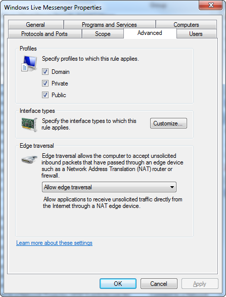

Windows Firewall 第一次正式浮上抬面是 Windows XP SP2 時，預設是開啟的。
設定上區分為 standard/domain 兩種 profile，電腦有登入 domain 時會套用 domain profile，否則就是套用 standard profile。
預設會阻擋所有未經請求（unsolicited）的 inbound connections，對 outbout connections 則幾乎不做控管。所謂的 exception 指的是那些 port、program、system service 可以接受（listen）未經請求的連線而言，而 scope 則可以進一步控制這個 exception 只適用於某些特定來源的連線。
Windows Firewall > Exceptions 的設定會套用到所有的網卡，而 Windows Firewall > Advanced 則可以為每張網卡做不同的設定。但 Exceptions 終究是白名單，好像無法在 Windows Firewall > Advanced 這一層將 Windows Fireall > Exceptions 裡打開的通道關起來？ 分開設定
Windows Firewall 的設定除了來自控制台之外，也可能來自 netsh firewall、Local Group Policy 與 Domain-based Group Policy。最後的結果就是 Domain-based Group Policy > Local Group Policy > Control Panel > netsh firewall 合併後的結果。只是如果大家都是設定白名單，衝突是怎麼來的？最後是取不同設定間最大的交集嗎？
Windows Firewall with Advanced Security
Vista 後 Windows Firewall with Advanced Security 取代原有的 Windows Firewall，原來的 netsh firewall 也被 netsh advfirewall firewall 取代。可以進一步控管 outbout connections，當然預設是全部放行的，但還是可以從 Turn Windows Firewall on or off 裡，分開設定預設要阻擋或放行 inbound/outbound connections。
事實上，Windows Firewall with Advanced Security 與舊 Windows Firewall 的觀念有很大的不同。感覺只是將 standard profile 拆成 private/public 兩個 profiles，但舊有 Profile > NIC 的分層在 Windows Firewall with Advanced Security 已經看不到了，取而代之的是將所有的 NIC 粗分為 Home or work (private) networks 與 Public networks，會在第一次連線時由使用者來決定。
之後每一條 inbound/outbound rules 都可以指定要套在一或多個 profiles - Domain, Private, Public，甚至細部控制到要套用到那幾種 Interface Types：

參考資料
-
Windows Firewall with Advanced Security and IPsec (2009-06-15) - 適用 Windows 7, Windows Server 2008, Windows Server 2008 R2, Windows Vista
-
Windows Firewall Operations Guide: Windows Firewall (WF) (2005-03-02) - 針對 Windows Server 2003
-
Windows Firewall Technical Reference (2003-03-28)
-
How to Create Advanced Firewall Rules in the Windows Firewall - How-To Geek (2012-04-30) - 很強大但不是很方便設定的工具，作者最後建議用其他 3-party 的工具來取代。
-
How to Configure Windows Firewall on a Single Computer (2004-12-10) - Windows Firewall > Exceptions 的設定（standard configuration）會套用到所有的網卡，而 Windows Firewall > Advanced 則可以為每張網卡做不同的設定。但 Exceptions 終究是白名單，好像無法在 Windows Firewall > Advanced 這一層將 Windows Fireall > Exceptions 裡打開的通道關起來？
-
Managing Windows Firewall Profiles: Windows Firewall (WF) (2005-03-28) - standard/domain profile，預設採用 currently in used。
-
How Windows Firewall Works (2003-03-28) - stateful host-firewall, IPv4 + IPv6, allows all outgoing traffic, exception = receive unsolicited traffic, standard/domain profiles = whether connected to a domain